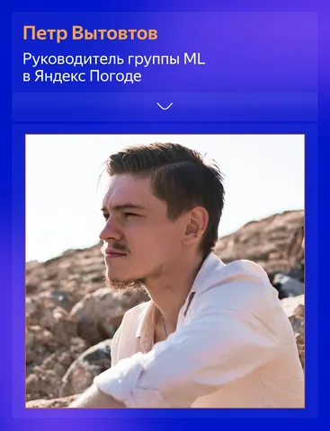
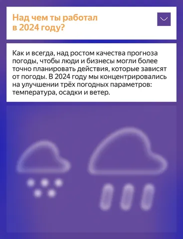
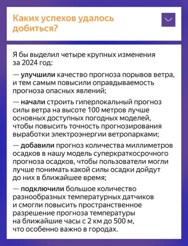
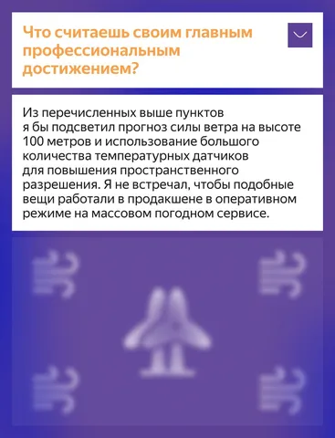
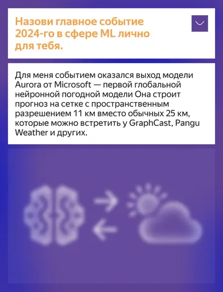
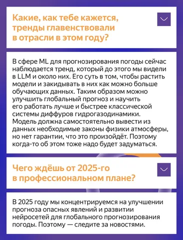

Погода в доме, конечно, важна, но нужно и на улицу выходить. А чтобы дождь или снег не застали вас врасплох, стоит ознакомиться с прогнозом.
В его создании сегодня ключевую роль играют нейросети, которые анализируют огромные массивы данных. О том, как эти технологии преобразили сервис Яндекс Погода, а также о своих профессиональных достижениях и вызовах нашему каналу рассказал Петр Вытовтов — руководитель группы машинного обучения направления.
#YaMLpeople
ML Underhood
